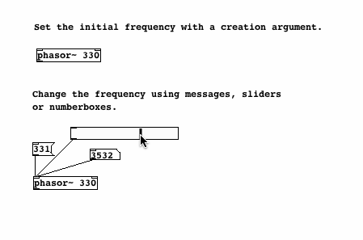
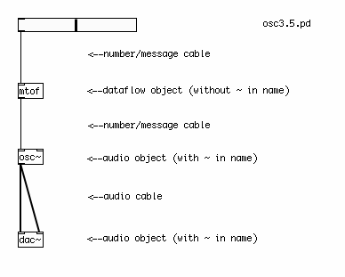

Frequency
In order to to create sound, each oscillator object takes a numerical input which represents a frequency in Hertz. This number determines the number of times the oscillator will make its waveform during one second. By using a creation argument (a default setting typed into the object box when the object is first created), we can set the initial frequency of an oscillator. And by using an [hslider] (Horizontal Slider), a Number or a Message, we can send numerical messages to change the frequency of the oscillator.

Audio vs Message Cables
In all the examples so far, notice the difference between the cable for messages, which is thin, and the cable for audio, which is thicker. Messages can be sent to audio objects (those with a ~ in their name), but usually audio cannot be sent to message objects (those without a ~ in their name). Attempting to do so will cause Pd to print "error: can't connect signal outlet to control inlet", and it will not allow the connection to be made.

MIDI and Frequency
For many musical applications, the MIDI scale is a useful way of controlling the frequency of an oscillator. One can imagine the MIDI scale as a piano keyboard with 128 keys on it, and each key has been marked with a frequency in Hertz which represents that musical note. Below is a part of the table which makes up the MIDI scale. Three octaves are shown. The most important thing to notice is that a note which is one octave higher than another note (for example, the three A notes of 110 Hz, 220 Hz and 440 Hz) has a frequency which is twice that of the lower note.
MIDI MIDI MIDI Note Frequency Note Frequency Note Frequency C 36 65.4063913251 48 130.8127826503 60 261.6255653006 Db 37 69.2956577442 49 138.5913154884 61 277.1826309769 D 38 73.4161919794 50 146.8323839587 62 293.6647679174 Eb 39 77.7817459305 51 155.5634918610 63 311.1269837221 E 40 82.4068892282 52 164.8137784564 64 329.6275569129 F 41 87.3070578583 53 174.6141157165 65 349.2282314330 Gb 42 92.4986056779 54 184.9972113558 66 369.9944227116 G 43 97.9988589954 55 195.9977179909 67 391.9954359817 Ab 44 103.8261743950 56 207.6523487900 68 415.3046975799 A 45 110.0000000000 57 220.0000000000 69 440.0000000000 Bb 46 116.5409403795 58 233.0818807590 70 466.1637615181 B 47 123.4708253140 59 246.9416506281 71 493.8833012561
For the complete table, see http://www.phys.unsw.edu.au/jw/notes.html
The object in Pd which turns a MIDI note into a frequency in Hertz is called [mtof], or MIDI to Frequency. When the MIDI note "69" is sent to it, for example, it will output the number "440". Looking at our examples, you can see that each slider has a range of 0-127, and this is converted by an [mtof] object to a frequency which tells the oscillator what to do.
Of course, you aren't limited to the notes that Western music schools teach you are correct. So-called "microtonal" notes are possible as well. If you hold down the Shift key while using the mouse to change a Number, decimal numbers are possible, so that you can tell an [osc~] to play MIDI note number 76.89, for example.